The record is trustworthy.
Coverage, sources, corrections, match receipts, and dense archives are materially better than most historical sports products.
Full product review · post-launch
Red Thread has a distinctive visual language, unusually good evidence, and several genuinely moving story surfaces. Its largest opportunity is not another feature. It is making one sequence work everywhere: feel a night → understand what it meant → inspect the proof → follow the next thread.
Put the served night back at the front door, then make the match page carry the emotional context the homepage earned.
Strong launched product.
Core loop still fragmented.
The launch feedback makes sense: the site looks and feels considered. The review question now is whether its best craft is attached to the right product moments.
Coverage, sources, corrections, match receipts, and dense archives are materially better than most historical sports products.
Nine visible desktop destinations and six mature record surfaces compete with four promoted questions and one unfinished end-to-end thread.
The next phase should be subtractive: one night engine, fewer primary choices, stronger authored transitions, and no new top-level route.
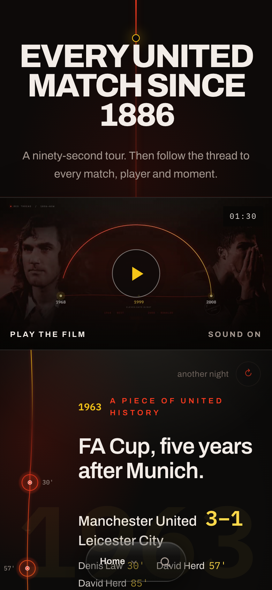
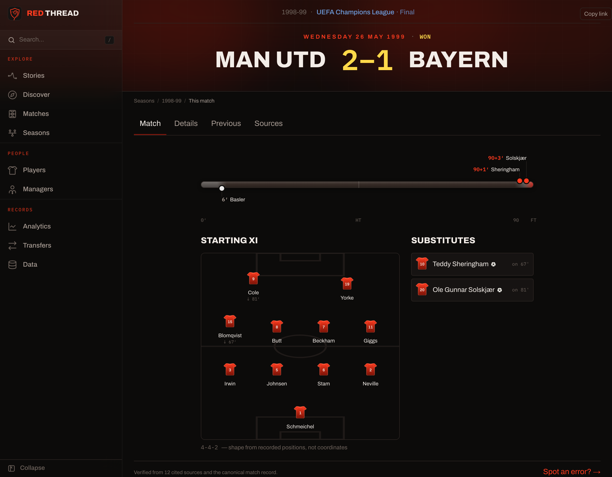
The core break: the homepage knows that Bayern led in the 90th and that two stoppage-time goals won the European Cup; lib/curatedNights.ts contains the line. The canonical match page does not use it. The product's emotion and its evidence live side by side, not in one experience.
The right response is not a rebrand. The existing system has real character and several surfaces already meet the product bar.
Two No. 7s proves the red thread can be structural, not decorative. Portraits, scale, motion, evidence links, and cross-era rhyme produce a genuine jolt.
Match flows, formations, coverage notes, cited sources, and correction paths make the archive inspectable without turning the interface into black-box analytics.
Floodlit darkness, warm ink, red and gold semantics, mono numbers, and disciplined club identity feel specific without imitating official United media.
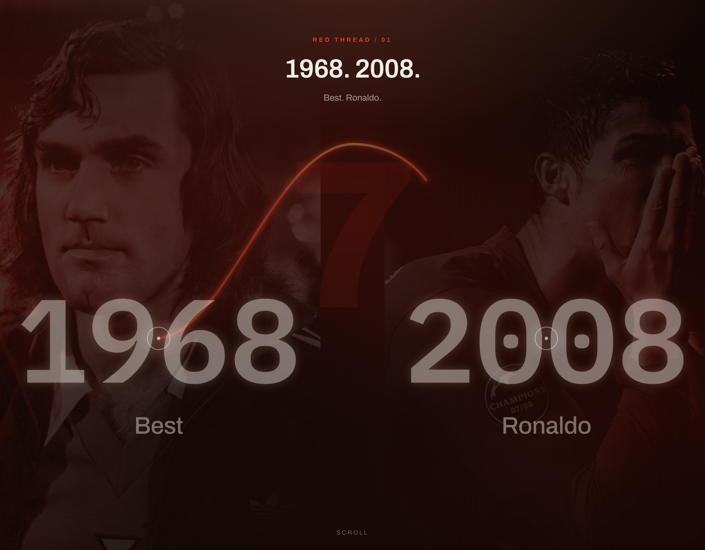
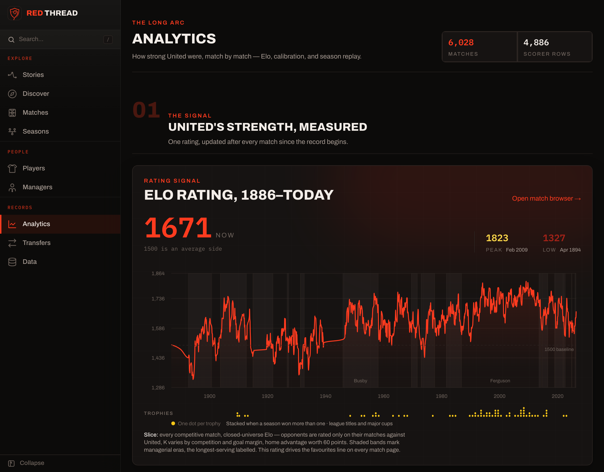
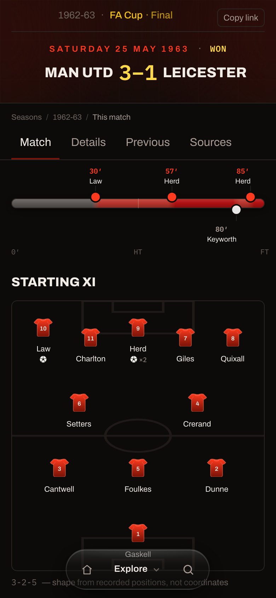
The code is not full of abandoned files: npm run knip passes. The bloat comes from complete, maintained capabilities that receive more product prominence than their role deserves.
.next output vs 2.0 GB budget| Area | Decision | Why | Concrete move |
|---|---|---|---|
| Homepage film | Move Keep the asset, remove the gate. |
It asks for attention before the product delivers the promised night. It also duplicates the story shelf's job. | Open on TonightHero. Put the film after the night or make it the trailer on /stories. |
| Custom comparison | Remove This is the last obvious loom. |
Two blank inputs hand meaning back to the user and contradict the explicit “lens, not loom” product rule. | Keep only authored pairings with role-correct measures and an explicit reason the comparison exists. |
| Curated cuts | Reframe A ranking is not yet a lens. |
“Opponents by win rate” guarantees a number, not a meaningful historical connection. | Promote only cuts framed as an answer: bogey sides, fortress years, cup-run routes. Hide the rest. |
| Analytics / Transfers / Data | Demote Excellent foundation, secondary navigation. |
They are among the most finished surfaces, but equal sidebar weight makes Red Thread read as an archive product first. | Collapse under “The record,” move Data to footer/utility, and let search remain the fast route for experts. |
| Night routes | Merge One engine, several entry states. |
Homepage night, Surprise, On This Day, and story exits behave like separate products and do not share one reliable fallback. | Use a single night renderer with today, curated, and related selection modes. |
| Entity depth | Keep, shorten The ledger earns its place. |
Player and entity pages are strong references, but the hero and archive can dominate before a fan encounters a memorable night. | Preserve the data; tighten first-screen height and make the rediscovery rail explain why its night matters. |
Runtime symptom: the production Explore sample loaded 243 resources and 13.4 MB of decoded response data before network idle; the Rooney page exposed 481 links in the DOM. These are directional measurements, not lab Web Vitals, but they show how route and evidence abundance spills into the browser. Dense-link Next prefetching should be audited after the product cuts.
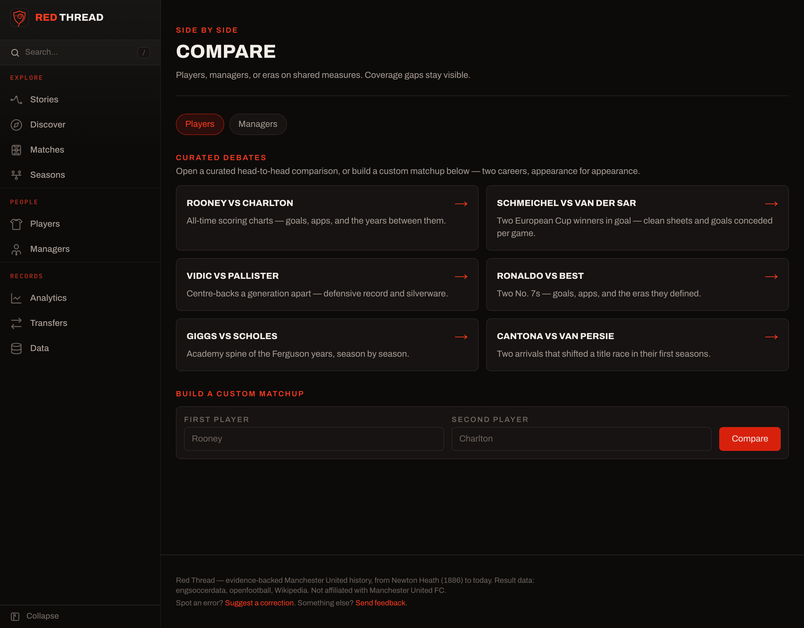
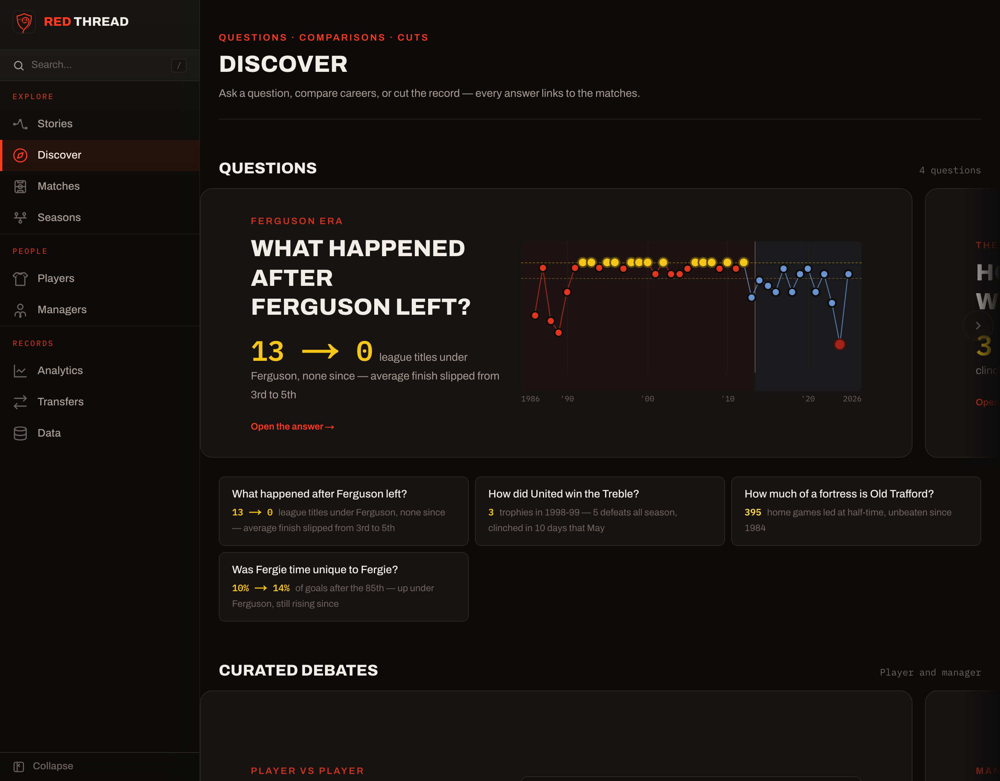
Red Thread is not “Manchester United data, beautifully presented.” It is a guided emotional experience whose claims happen to be provable from a complete record.
Every route should either deliver a night, explain a connection between nights, or help inspect the record behind one. The 6,028 match pages are not terminal receipts; they are the product's largest supply of potential sparks.
A red line is brand decoration until it answers “why this next?” The useful thread is a reasoned transition: Rooney → the night that changed his role → that season's pattern → the supporting matches.
Four Treble-quality questions are more valuable than forty cuts. A lens earns publication only when it guarantees meaning across the choices it allows and exposes the matches behind the answer.
Coverage and provenance should stay at interpretation points. They do not need equal brand or navigation weight with Stories, Discover, and the match archive.
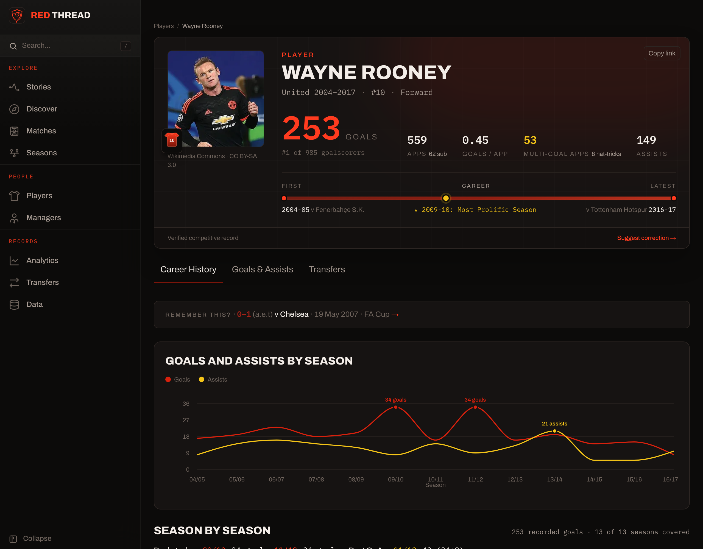
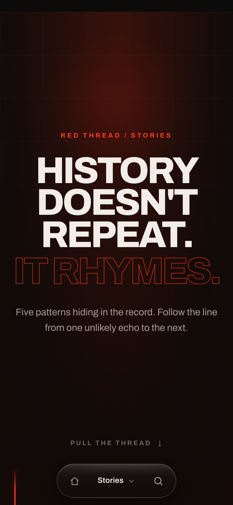
These are not missing screens. They are unresolved systems the finished product depends on. Building more routes before settling them would compound the wrong architecture.
Define three honest tiers: authored nights with bespoke stakes; computed nights with reliable context such as final, comeback, milestone, or late winner; plain receipts when no meaning can be asserted. The same shell should open home, surprise, calendar, match, and entity trails.
Done whenCamp Nou 1999 and an ordinary 1907 league match both feel intentional without pretending to be equally dramatic.
Rediscovery rails exist, but the hard part is choosing and explaining the next night. The scorer, final, debut, rivalry, record swing, or season turning point must be visible as the reason for the recommendation.
Done whenNo link says only “Remember this?”; every suggested night carries a defensible because.
Create a publication test: one or two knobs maximum; role- and era-correct measures; useful under every allowed choice; coverage visible; answer links to matches. Define when a weak lens is revised, archived, or removed.
Done whenThe custom comparison and cold win-rate cuts cannot pass review, while Best/Ronaldo's fifth-season lens can.
On 14 July, On This Day still ends in an empty card. The finished product needs a fallback hierarchy across matches, transfers, debuts, milestones, and nearest significant nights without inventing history.
Done whenEvery date yields something truthful and worth opening, and “another night” never feels like a separate mini-app.
Desktop objects cannot only stack. Player portraits, statistics, timelines, tabs, and the floating pill currently crowd one another. Define what becomes summary, what swaps format, and what waits until after the first action.
Done whenA player identity, headline stat, and next action fit in one phone viewport without the navigation sitting over a key label or tab.
The homepage design diary correctly identifies the imagery problem. Choose a primary answer: data-as-image, typographic monuments, or a tiny licensed-safe period archive. Do not make every night wait for a photograph.
Done whenA 1948, 1968, 1999, and 2024 night each feels of its time without an anachronistic face or synthetic heritage.
The product promises hybrid command search, but lookup and authored question templates are different outcomes. Decide when search returns an entity, applies a known lens, offers a shaped suggestion, or admits it cannot compute the request.
Done when“Rooney” and “late goals under Ferguson” both produce honest, predictable next steps without overselling free-form analysis.
Five stories and four promoted questions show that quality is expensive. Set a sustainable bar, owner, cadence, and cap. The product needs a small living collection, not a permanently expanding catalogue.
Done whenThe collection can reach 8–10 exceptional lenses and then stop without pressure to fill every category.
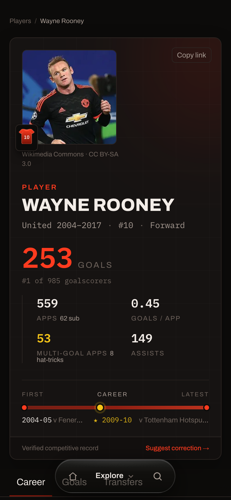
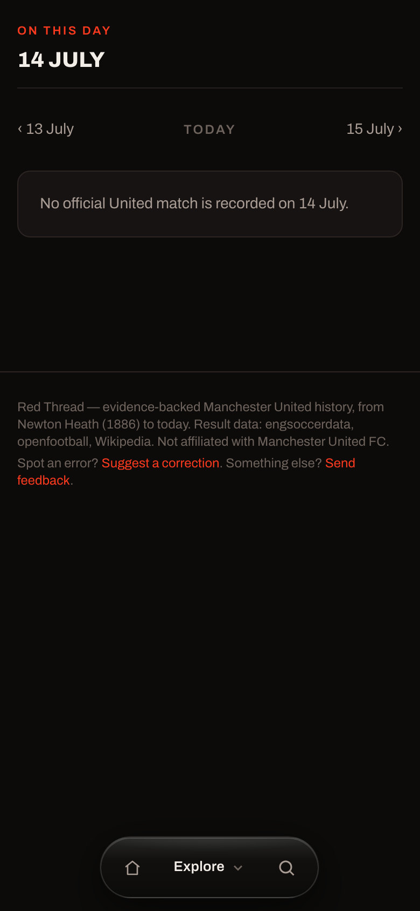
This sequence deliberately improves the user loop before refining the already strong foundation.
Render TonightHero before the film on both desktop and mobile. Move the film into Stories or immediately below the night as an optional deepening. Use the local 20-second excerpt only after production and source agree on its actual duration.
For curated and intrinsically dramatic nights, put the stakes line and one consequence above MatchFlow. Reuse existing curated-night text and question facts; do not create a second story page inside the receipt.
Remove the custom comparison form. Keep the six authored debates. Pause or hide any curated cut that cannot explain why its ranking matters to a fan.
Fall through from exact-date matches to transfers, debuts, milestones, or the nearest curated anniversary. Preserve source and date honesty in the copy.
Replace generic “Remember this?” phrasing with the detected reason: debut, final goal, hat-trick, late winner, biggest Elo swing, final, or rivalry hinge. If there is no strong reason, do not show a rail.
Keep Stories, Discover, Matches, Seasons, and People as the visible product. Put Analytics and Transfers under a collapsed “The record” group; move Data, corrections, API, and exports to utility/footer destinations.
Reduce player-image height, promote one headline measure, defer secondary measures behind the first tab, and test the floating pill against tab bars and chart captions at 390×844.
Audit prefetch on dense rails and registers, split giant modules such as QuestionModules.tsx, and revisit full prerender strategy. The current check reports 3,008.7 MB of build output against a 2,000 MB budget.
npm run check:perf passes, and Explore no longer pulls hundreds of resources on first load.--color-ink-faint measures roughly 3.2–3.4:1 against panel/pitch, below 4.5:1 for the 10–12px captions that use it. Raise the token or reserve it for non-essential large text.
One representative loop first. Extract the pattern only after it works on the hardest night in the archive.
Home order, custom compare removal, cold-cut pause, 14 July fallback, production/local film copy reconciliation.
Served night → contextual match page → Treble lens → match evidence → related night. Test desktop, mobile, and reduced motion.
Define the universal night tiers and explained rediscovery reasons. Apply first to the curated pool and Rooney, 1998–99, and Bayern pages.
Simplify navigation, mobile composition, prefetch, build output, and small-text contrast. Do not add a new story type.
PRODUCT.md, DESIGN.md, documentation index, homepage, journey, mobile, detail-page, performance, and prior surface-review records.npm run knip: passed, no unused-file finding.npm run check:perf: failed because checked .next output was 3,008.7 MB against a 2,000 MB budget. Largest sampled HTML remained under its separate 180 KB gzip budget.Red Thread has already built the difficult raw material: the record, the visual language, the stories, and the evidence. The remaining design work is to make them behave like one product.